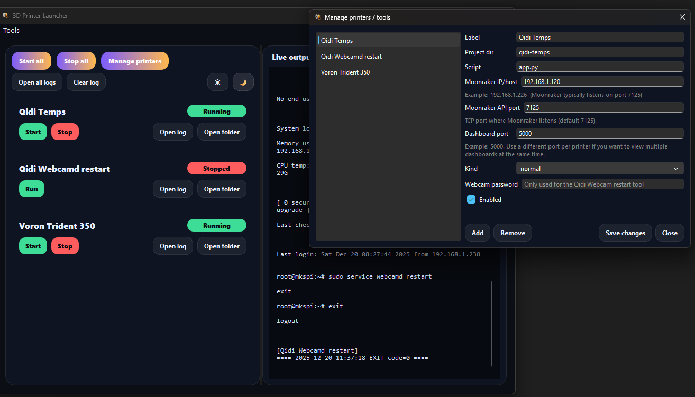

A printer stream needs its temperatures on screen and a couple of helper scripts on hand. Doing that by hand means juggling terminals, virtual environments and ports every session. 3D-Printer-Launcher turns all of it into one window with a Start button per tool.
The launcher window

What the launcher does
A single windowed app (PySide6/Qt) that runs each tool in its own environment and keeps you out of the terminal.
One card per tool
Every printer helper gets a card with a status badge (Stopped, Running, Error) and Start, Stop, Open log and Open folder buttons.
Live merged logs
A single pane shows output from every running tool, each line prefixed with the tool it came from and wrapped so nothing runs off the side.
Start all, stop all
Bulk controls bring every dashboard up or down at once. The buttons enable and disable themselves based on what is running.
Add printers from the UI
The Manage dialog edits printers and tools with no code: label, project folder, script, Moonraker host and port, dashboard port and tool kind.
Moonraker under the hood
Host and port are combined into the Moonraker query URL and passed to each dashboard, so a printer move is a field edit, not a code change.
Light and dark themes
A one-click theme toggle in the top bar, so the launcher matches the rest of your streaming setup.
The tools it launches
Three helpers ship in the box; add your own printers alongside them from the UI.
Qidi temperature dashboard
A Flask app served by Waitress that renders live Qidi printer temperatures as a local web page.
Voron / Klipper temperature dashboard
The same dashboard for any Voron or generic Klipper printer reachable over Moonraker. Run several at once on different ports.
Qidi webcam restart helper
A one-shot SSH helper that restarts webcamd on a Qidi when the camera feed drops, with the single Run action a one-shot tool shows.
Built for OBS overlays
Each dashboard is a plain local HTTP page on its own port, so it drops straight into OBS Studio as a Browser Source. Add one source per printer, size it to a thin bar across the bottom of your canvas and your temperatures sit on the stream.
Give every enabled printer a unique dashboard port and you can run and overlay several printers
side by side. Always use http:// URLs, not https://.
Download 3D Printer Launcher
Download the newest release with one click. Free and open source under the LGPL-3.0 licence, built and shipped for Windows.
Latest releaseWhat's new in this release · All releases · Source on GitHub · Build from source
Getting started
Download once, set up a shared environment once, then it is all buttons.
- Download the latest Windows .exe from the GitHub Releases page and keep it next to the
qidi-temps,VoronTempsandqidiwebcamdrestartfolders. - Install Python 3.11+, then create the shared
venvonce andpip install -r requirements.txt. The launcher uses that environment automatically. - Open Manage printers to point each card at your printer's Moonraker host, API port and dashboard port.
- Press Start on a card, open the dashboard URL in a browser to check it, then add it to OBS as a Browser Source.
Why it exists
This is a personal streaming tool, built to put printer temperatures on screen without a ritual. The dashboards, the SSH restart and the OBS overlays were all things I ran by hand until launching them one at a time got tedious.
So the launcher wraps them: one window, a Start button per tool, a shared environment and a manage dialog so a printer swap is a form edit rather than a code change. It is dogfood; the features are the ones I actually use each session.
Frequently asked questions
Is 3D-Printer-Launcher free?
Yes. It is free and open source, released under the GNU LGPL-3.0 licence.
What do I need before I start?
A Windows PC, Python 3.11+ for the shared environment, and one or more Klipper printers reachable over the Moonraker API on your network. OBS Studio is optional and only needed for stream overlays.
Do I have to edit code to add a printer?
No. Use the Manage printers dialog to set the label, folders, Moonraker host and port and dashboard port. You only touch the setup guide if a dashboard loads but some sensor values are missing.
Can I show more than one printer at once?
Yes. Give each enabled printer a unique dashboard port, start as many as you like and add one OBS Browser Source per printer.
Does it run on Linux or macOS?
The launcher is built and shipped for Windows. The source includes Nuitka build scripts for several Linux distributions and macOS if you want to build it yourself; see DEVELOPMENT_README.md.